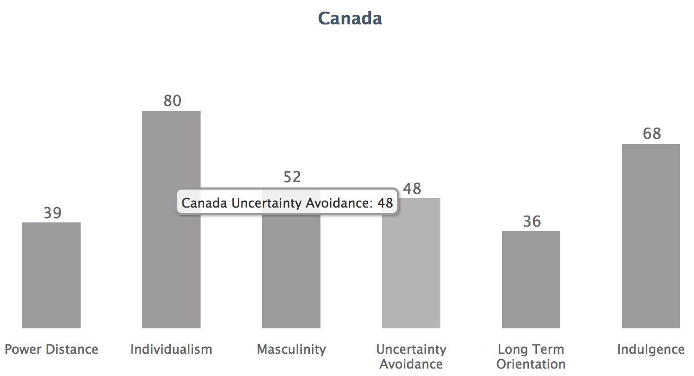
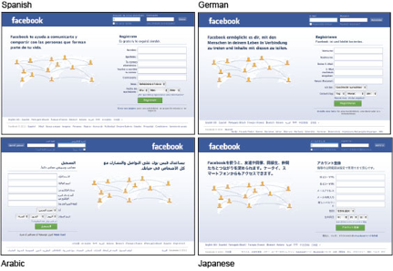
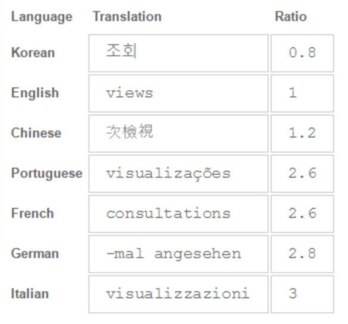
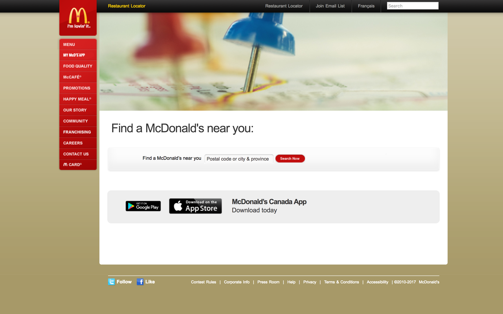
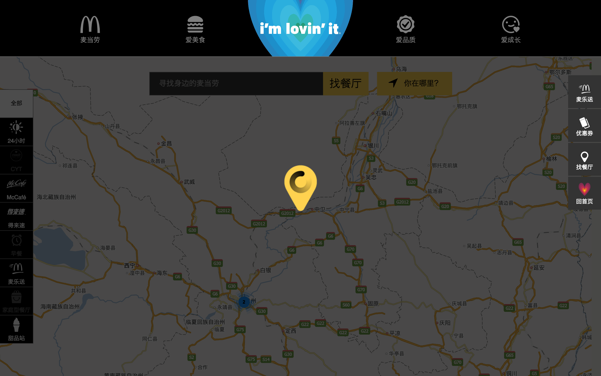

What is Global Design?
The rapid spread of online commerce has created an opportunity to open up digital markets and products to the international community. This also creates increased competition for your products, and a resulting need to make sure your brand can reach citizens in all languages and cultures.
Narrow Field of View
Living in a specific region, it’s easy to assume that your cultures design standards are global design standards, particularly in the English speaking world. As a result the majority of the internet's pages and market places are primarily in English. Some factors such as programming languages or the shortage of typographers in foreign languages could contribute to this problem. But often, this results in designs that focus on the English speaking world, with the western world receiving a lot of attention. In order to design an accessible product, it’s important to recognize the influence of culture and language in design.
Hofstede’s Cultural Dimension Theory
While there has been a lot of research around cultural differences, not many have been as widespread as Geert Hofstede’s work. According to Hofstede (1980), world cultures vary across certain consistent and fundamental values or dimensions. These 5 dimensions are as follows.
- Power Distance: the extent to which the powerful accept equal power distribution
- Collectivism vs. Individualism: the degree to which individuals are integrated into groups, with emphasis on personal/individual succes or group affiliation/loyalty
- Femininity vs. Masculinity: the distribution of emotional roles between genders. Masculine cultures are competitive, assertive, materialistic and feminine value relationships and quality of life
- Uncertainty Avoidance:: the degree of avoidance of uncertainty and ambiguity. High Avoidance cultures are more emotional, and control with regulations. Low Avoidance cultures are more pragmatic with less regulation.
- Long vs. Short-Term Orientation: the time horizon of the society. Long term are future oriented, pragmatic rewarding persistence and saving and short term cultures focus on the present rewarding social relations .
Canada's scoring on Hoefstede's 5 dimensions can be seen below
Sourced from: https://geert-hofstede.com/canada.html
While these dimensions were created in an attempt to decipher cultural values from a sociological perspective, the insights this systematic framework provide into cultural norms are extremely valuable and applicable to design.
A sixth dimension was added some years later known as indulgence - the extent to which people try and control their desires and impulses. The two of extremes on this spectrum are indulgent and restrained.
Localization
Localization refers to the adaptation of a product, application or document content to meet the language, cultural and other requirements of a specific target market (a locale). This places an emphasis on considering user context in the design process, specifically looking into their cultural demographic. The level of localization can be considered a spectrum, where on one end there is the bare minimum of translations, and on the other a completely different site. There are advantages and disadvantages to both.
Standardization
While often confused with localization, standardization is a method of localization. This is the design of a global template - one design that can be modified to fit cultural norms while still preserving consistent high level design features (navigation, layout). Global templates make switching between different countries less disruptive, and results in a homogeneous online culture that could break down barriers and make one international market place. To do this its important to plan for variations in cultures by creating neutral templates with moving parts i.e. images, icons, copy (Modular or atomic design). Getting input from different cultures is extremely important, and layouts should be adaptable to any culture. A prime example of this method in place is Facebook.

Transcreation
Transcreation, the process of adapting your brand’s identity and message for different cultures and audiences. This is extremely important as different groups react differently to various symbols, messages, cues and even colours. Applied to all areas of design, this is creating completely distinct designs for each locale. The objective is to evoke the same emotions, messages and brand identity through different cultural cues and relationships. While this typically results in higher engagement and conversion, it can be extraordinarily expensive and often results in the company’s different locales working in segregation. The process of designing with this methodology is to treat each individual locale as their own distinct project. A more in depth analysis of this in action can be seen in the case study below
Design Takeaways
While there isn't any agreement as to the benefit of transcreation or standardization, there are some general guidelines that can help designers address their diverse user base.
- Language: a distinctive aspect of different cultures, that has four major considerations.
- Directionality should be addressed systematically and comprehensively but thankfully Google Material Design provides guidelines for mirroring interfaces.
- Quality of translation, particularly in the user's context is vital in messaging
- Typography must also be heavily considered as Bold and italics are often not available or confused copy in different script styles.
- Length, during translation the length of a language can change dramatically. This can effect layouts very drastically, particularly navigation were copy can overflow dedicated spaces.
 - Units: follow the norms of the local, date/time, currency, phone number or any data entry points to improve usability
- Layout: is a medium of communicating with the user, particularly in navigation. The meaning of the amount of negative space, orientation and pagination should all be considered through in different locales. For example, Japanese people tend to read in zones rather than linear, they filter through sections and look for explanations first and conclusion after. In English we often look for titles first and explanations after. Thus websites in Japan typically maximize content per space using small images and what looks like dense text to westerners.
- Navigation: pathing users through specific tunnels or flows also needs to be considered in context of different cultures. In cultures where directionality of language is right to left, navigation should also move from right to left.
- Symbols: Different symbols can have completely different meanings depending on culture and geographical location. Elements that are only familiar in certain parts of the world can make navigation extremely difficult. In mirrored interfaces particularly, icon directionality is particularly important. Toggles, slides and back buttons are all reversed.
- Imagery: Ethnicity, content, locale, activity, all considerations when selecting photographs, the amount of emotion and what an image can invoke are different. Even the use case for photography is different for various cultures.
- Colours: colour semiotics varies across cultures and can impact user expectations. In some cultures, colours are related to life, activity, fun and lack thereof is more stark, negative. In this case it is not uncommon to see bright and colorful sites with little to no white space.
- Mental Models: users look at data and make decisions differently. The way we interact with products is strongly defined by our culture, which affects the way we think. Consider how users in different cultures might consume information and make decisions.
Ethics
Designing for a unfamiliar culture is a sensitive undertaking. It is extremely important to understand different cultural perspectives, while not stereotyping an entire population. Take care to not make assumptions, do the research and listen to locals, embrace the cultural characteristics and use them to your advantage. Don't forget the fundamental design principles that should help validate decisions. In the case of designing for foreign cultures, its even more important to go where your users are. Listen to their feedback and data, and be flexible. Even though we are familiar with design patterns, it may surprise you when a different cultural group reacts differently
Case Study: McDonald's
McDonald's has drastically different websites for different locales around the world. They are often both praised and criticized for their highly personalized experiences based on country. Without access to their research and data, its difficult to say whether or not the benefits of transcreation far outweigh the costs. However, taking a look into the sites for specific countries reveals a great deal about the design considerations McDonald's took when creating their websites. Here we will look at McDonald's Canada and McDonald's China . Specifically I will be looking at the design of their landing page, and the process of locating a restaurant near me.
- Canada: For details on Canada's scoring on Hofstede's 5 dimensions look here. Typical to egalitarian countries, this site provides informal structures with clear and shallow navigation. The clear nod to Canadian farming in one of the images in the carousel as well as its own place in the primary navigation shows a very personal regard for Canadian values. The very consumer based ad methods resonate well with the individualist culture that Canadians portray with "you" used in their language. The large full page photography based carousel is a common landing page for Western sites, where wordy descriptions are not as popular as imagery. The landing page itself can fit almost perfectly within the window without scrolling, showing the lack of browsing interest for this site in Canada. Finally, all the very consumer driven content shows a more consumer-based society.
- China: For details on China's scoring on Hofstede's 5 dimensions look here. It's quite apparent from a first glance that the design and layout of this site is completely different than the Canadian version. Firstly the site is built in an extremely modular manner that can be easily scaled for mobile. This likely indicates a high rate of users on mobile or using varied screen sizes. This could also indicate the absence of a dedicated mobile application since the site itself is very mobile-friendly. Secondly, the extremely simple, visual navigation indicates a positive response for the inclusion symbols and icons to assist in navigation. There is also many more options in terms of navigation with the top and side navigation as well as with all the articles The extremely crowded information dense with bright eye catching colors and heavy in copy is extremely common in East Asian websites. The content continuously loads as you scroll making the site look more like a newspaper or blog indicating a more immersive online experience. The moving animation at the top of the page is also extremely eye catching demonstrating a very different brand strategy than North America.

To navigate to the Restaurant Locator page, a link is immediately available on the landing page, though it is very small. This may show that users want this functionality, but it is not a prevalent use case. On the Restaurant Locator page itself, there exists a text field to enter a postal code, city or province. This shows particular detail has been given to designing a distinctly Canadian input field. The imagery seems a little dated, but very clearly reinforces the message of location finding. Once more, the use of imagery as a means of supplementing reading comes across strongly in this design. Notice also the extremely consistent navigation anchoring the site, offering the same clear navigation.
Throughout the site, there was a strong push to download the mobile application. This could indicate a various interests: perhaps the focus of the design team in Canada is on optimizing the experience in the app, or that a key metric the Canadian McDonald's is trying to improve is the number of mobile downloads.
The navigation to the Restaurant Location page is in the secondary side navigation. It appears to be a more important feature based on its size and location on the page. Once more it also has an icon as well as words to describe its feature. This may be due to the difficulty of reading Chinese characters due to the lack of available typefaces and the condensed nature of the characters. Interestingly, the location page is unable to load until it finds your location displaying a personalized level of automation. Once the page loads, it automatically knows your location and provides you the location. Its interesting that the map is already populated and there are no other images on this site. If you look to the left of the page, you can also see options to filter the search. It is clear from the additional features of the page that this user flow is quite popular. It's also interesting to note that the palette in China seems to veer away from red and yellow, but rather yellow and black, as is evident on this page. This could be due to the cultural associations with red in China as a celebratory color.
Throughout this site, it is very clear that a lot of work and maintenance needs to be put in to upkeep its functionality. The various articles changed even throughout my case study meaning that the content is constantly changing. This could indicate a high engagement on this website vs. its Canadian counterparts. Additionally the services offered also differ where in China, customers can have their food delivered. Perhaps this extra real world service places a heavier burden on their digital space for customers accessing the site for different purposes. In comparison to the Canadian site, it is clear that McDonald's China places a heavier emphasis on engaging user experiences on the web.